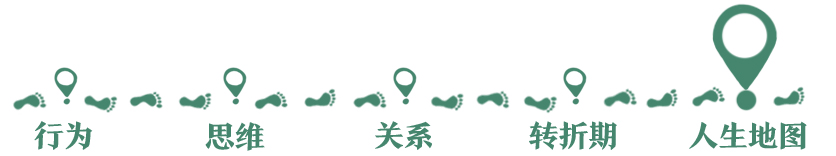
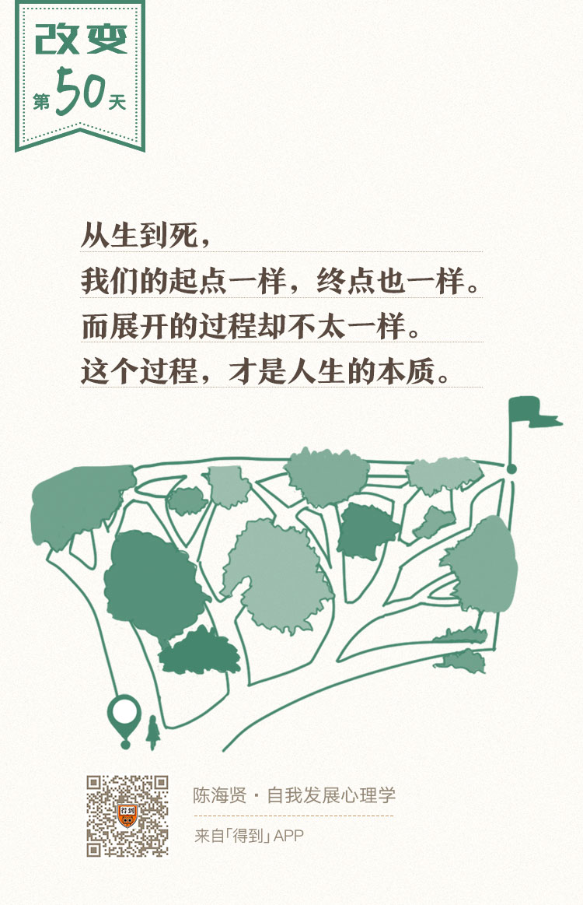

欢迎来到《自我发展心理学》。
你好，我是陈海贤。
我们的课程，从如何改变行为，转变思维，讲到如何改善关系，走过转折期，讲到完成人生各个阶段的课题。
就像一个婴儿，慢慢长大、成熟、老去，不知不觉，已经接近尾声了。
如果你听到了这里，这意味着，我们已经以课程的形式，相互陪伴50天了。你听着我这不太标准的浙江普通话，也已经听了50天了。
最后这一节课，该说些什么呢？
既然人生最后的阶段，回顾整合是一件重要的事，那我们也先来回顾一下我们的课程好了。
首先，我们的课程有一个特别的安排，就是在每一章的最后一节课，会以某种形式否定前面的内容，让课程的内容进一步深化。
比如，在行为改变的最后一节，我说：不改变也是一种改变，接纳自我是很难的改变；
在思维改变的最后一节，我说：我们在前面所讲的，都是局部的知识，只有承认它是局部知识，才不会把它变成另一种“应该思维”，才会去探索剩下的部分是什么；
在关系改变的最后一节，我说：虽然我们一直在强调独立，课题分离，但独立是为了更好地联结。
那按照惯例，如果对第四章的转折期和第五章的人生发展阶段，做一个总体的否定的话，我会说：
其实所谓的改变进程或者人生发展阶段，都只是大多数人要走的路，也可能，它也代表了大多数人的某种偏见。而每个人，都有他自己独特的路要走。
我有一个朋友跟我说：“我并没有完成建立亲密关系的课题，可是我有了另一种本领，容纳孤独的能力。”
我觉得他说得有道理。这也让我思考，人生发展阶段的本质是什么。
我觉得，其实是对矛盾的适应。
人总是处于矛盾当中，自我和他人、亲密和孤独、理想和现实、生和死，每一个阶段，我们的矛盾都会不一样。
如果你走的是大家都走的路，在特定的人生阶段，这些矛盾会给你很大的压力。就像地壳的两块在不停挤压，最后一座高山出来了。
如果你适应了这个阶段的矛盾，就会收获这个阶段的品质，你的思维也能跃升到了一个新的层次。
如果你走的路不是大家都走的路，或者你面对的课题，不是以常规顺序呈现的，那会怎么样呢？
你也一定会在你的路上，遇到你的矛盾，经历你的艰难，并通过这些艰难，学习到别人没有学到的东西。只不过，独特的路，是很难被作为普遍的规律归纳出来的。
为什么我们要在每章的最后一节，否定前面的内容呢？
这并不是自相矛盾，而是为了对应真实的自我发展规律。自我的发展，也遵循同样的规律。
这种否定，就是自我发展的过程。这种否定不是说了“是”，然后又说“否”，说了“对”，然后又说“错”的那样的否定，而是“除了这个，还有更多”那样的否定。
它不仅是否定，也是继承。我们就是在对以前自我的不断否定中，逐渐实现自我发展的。
第二，在课程的最后一个阶段，我刻意没讲具体的方法。
我没有讲怎么确立身份认同、怎么发展亲密关系、怎么发展繁衍的能力，我只是讲这些阶段面临的矛盾和一种可能的出路。
如果你问我，那我该怎么完成这个阶段的任务呢？
我就会请你从第一节开始，去回顾课程前面的内容。想想怎么走出心理舒适区、怎么改变自己的思维、怎么发展不同的关系、怎么度过转折期。
因为，虽然人生的发展阶段有它特定的任务，但是对每天面对具体生活的人来说，改变就在每个行为、每种想法、每段关系里。
课程后面问题的答案，却是在前面提供的。这样，我们的课程又回去了。这也对应了自我发展的另一条规律。
心理学家范伦特说：
“从40岁到衰老的步骤，和前面的发展阶段是反向的。40岁时面对情感危机，像青少年一样；60岁时挣扎着抗拒时光变化，像10岁一样；80岁时全神贯注于一个难以控制的、不稳定的身体，就像我们刚刚学步一样。”
他还没说，我们消失之后的一片空白和出生之前的一片空白也很像。自我的发展，就是这样一条回去的路。而我们的课程，同样是一条回去的路。
其实，学习这门课的过程和自我发展的过程，是很相似的。如果说，这门课程是一幅关于改变的地图，它可能只是一幅局部的地图，有些地方还标识的不那么清楚。
也许你会问：既然这只是局部的地图，那为什么我要拿着这幅地图呢？
答案是：为了上路。
有了地图，你就可以上路了。你可以去尝试改变，比照着改变的经验，了解更多关于自我发展的知识。
也许你会发现，你的经验有些跟我讲的很像，有些不那么像。没有关系，你走的路，比地图重要。
在第二章讲局部知识的那一节里，我说了一句话：
“所有的知识都是局部的，找出它不够完善的部分，是很容易的。可是要听到它对的地方，却并不容易。你要先接受他所说的都是错的，才能听到他说的对的地方在哪里。”
这门课的主编说，老师，这句话没讲清楚，能不能说得更清楚一些？我说太好了，就让它这样不清楚地留着。
我相信，如果这句话让你觉得不清楚，反而会引发你的思考。
想不明白，你会回来问我，我可以解释给你听。如果我解释得不清楚，你会进一步地思考。这一来一回的过程，远比一句清晰的话更重要。
过程是最重要的，任何模糊的但是能够引发探索过程的知识，都比清晰但完结了的知识有价值。
知识的价值，不是给你提供一个确定的答案，而是引发探索的过程。
知识需要让自己成为过程中的一环。如果知识不能引发探索的过程了，那一定不是因为它太完美了，而是因为它已经陈旧到没人理了。
这就像我们的人生，从生到死，我们的起点一样，终点也一样，可是，这个展开的过程，却不太一样。而这个过程，才是它的本质。
就像王小波写给李银河的信里说的：
让一切发生，这就是过程的意义。我们会老去、死亡，作为结果，我们会消失不见，可是过程却不会消失。
当然，我们还要有我们的目标。我们还要为目标的成功或者失败欢欣雀跃或者伤心流泪。
可是你要知道，目标的意义，就是为了引发这个过程，就像地图的意义，是为了上路一样。如果没有目标，我们就没法展开过程。
可是，如果太注重目标，太注重结果的成败，那我们也会失去这个过程。
学习这门课，对你来说，是一个过程。讲这门课，对我来说，也是一个过程。在这个过程里，我有机会整理我所知道的东西，也有机会回顾我自己的人生。
在讲人生发展阶段的时候，我在想，我年轻的时候是怎么设想未来的呢？
在年轻的时候，我想的是中年太可怕了，我再也没有精力熬夜了，我的八块腹肌会变成一团肥肉，再也不会有姑娘喜欢我了。有了家庭和孩子，我再也没办法来一场说走就走的旅行了。
现在想想，这些可怕的事情，都发生了。可是很多没想到的事情也发生了。
在与人交往的时候，我变得更加成熟坦然了。因为在职业上的认同和精进，我获得了一些年轻时不会有的尊敬，在经济上，也有了更大的自由。
当然还有家庭和孩子，我是被她们束缚了，可是谁会想到，她们束缚我的方式是快乐呢？看到孩子的笑，我哪里也不想去了。
我们设想的人生，和我们真正的体验，总是有很大的差距。这也是为什么过程很重要。
体验是在过程里发生的。
我经历过青春期的迷茫，知道建立亲密关系的疑虑和孤独的滋味，了解职业变动的彷徨和建立职业认同以后的安稳和喜悦。可是无论我怎么设想，我都不会真正知道接下来的人生会怎么样。
想想衰老或者死亡，我还是很怕的。
可是我也想，就像我在青春期设想中年那样，也许想象衰老，我也只能想象显而易见的失去，而很难想象获得。
想想10年以后、20年以后，或者更长的时间，我希望自己一直没有停下发展的脚步，希望你也没有停下发展的脚步。
那时候我老了，又经历了很多事，而你呢，对人生也有了一些新的认识。如果那时候得到还在，我们还可以再来讲讲关于自我发展的事。
对于一个心理咨询师来说，关系是非常重要的，因为过程也是在关系里发生的。对于我们这段以“自我发展”的知识为媒介，所建构的你和我之间的关系，我很珍惜它。
说到这里，我们的课程就要按下暂停键了。它不是结束，就像自我发展是一条通过结束和开始不断延伸的路一样。
我们这节课就到这里了，未来的下节课，我们再见。
哦，对了，还有一件事。我们把课程做成了一批精美的实体卡。如果你觉得课程对你有帮助，想把它作为礼物送给你的家人和朋友，你可以点击文稿，了解我们的实体礼品卡。
这回，我们就真的要再见了。未来的不久，期待再见。
